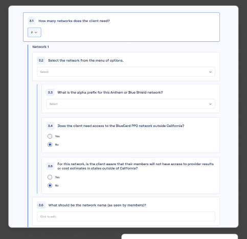
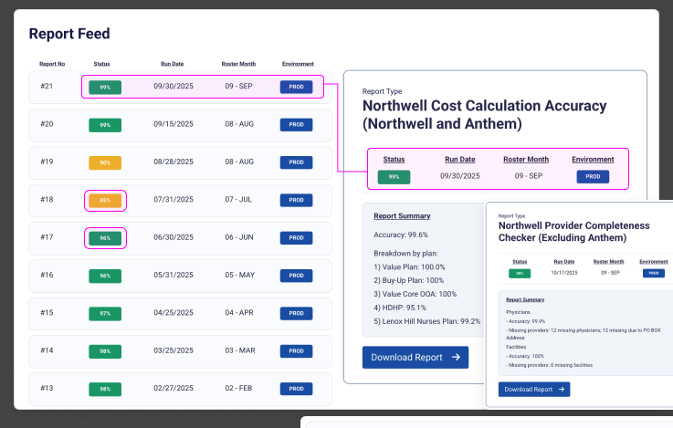
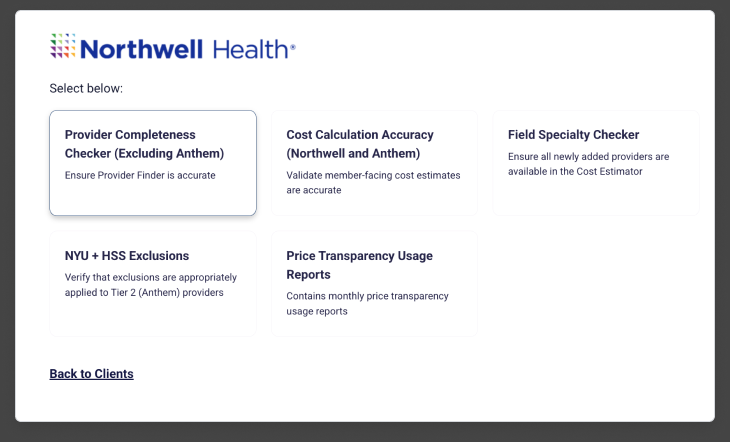
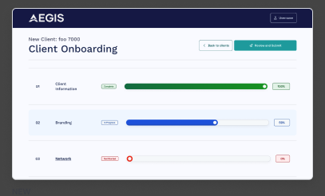

4-person startup. 3-month runway. The product needed to pivot entirely — and the design system I built from day one is what made it possible in weeks, not months.
Impact
When the founding team decided to change markets, the modular system I'd built meant 60% of the product could be reused directly — auth, forms, navigation, cards, progress UI. Only the brand, content, and healthcare-specific features needed rebuilding.
Problem
Mindset was conceived as a consumer meditation app in a market dominated by Calm ($2B valuation) and Headspace ($320M funding). We were a self-funded 4-person team with no marketing budget.
Consumer meditation market dominated by well-funded incumbents. Headspace: 70M+ downloads. Calm: 100M+ downloads, $150M annual revenue.
Self-funded with limited research budget. Couldn't compete on content volume, celebrity partnerships, or marketing spend.
Users already invested in competitors. Switching costs too high. No unique market position without significant funding.
The Strategic Decision
At week 12, we made the call: stop building for a saturated consumer market and leverage founder expertise for B2B healthcare.
We couldn't win in consumer wellness without a marketing budget. Healthcare workforce wellness made sense — employers pay for it, so there's no individual switching cost, and the market was much less crowded than B2C meditation. The co-founders had 10+ years in healthcare ops, which meant we could sell on expertise rather than spend.
Design System Advantage
From the start, Mindset was built on a token-based system — not because I knew we'd pivot, but because it was the right way to build. That decision turned out to matter a lot.
A brand identity swap required changing only the primitive layer — all semantic and component tokens cascaded automatically.
Reused (60%): Auth flows, forms, navigation, cards, progress UI, multi-tenant architecture — same patterns, same inputs, same structure.
Changed (40%): Brand identity, healthcare content, compliance features, admin-focused reporting.
The Product
Aegis isn't one tool — it's three platforms built from a shared system, each solving a different stage of client lifecycle.
10-section questionnaire replaces email-based requirements gathering. Real-time progress tracking, save-and-resume, and a review workflow that catches errors before implementation begins.

Most platforms validate once at launch. Aegis monitors continuously. 99+ automated reports run 24/7 for 35+ health plan clients — flagging stale records, formatting errors, and regulatory compliance gaps before they reach members.


Provider directory data is mission-critical — members depend on it to find care. Physicians move, retire, change specialties. A wrong address means someone shows up to a closed office. A wrong specialty means a misdiagnosis risk. The QA Hub exists because data degrades constantly, and manual checking doesn't scale across 35+ clients.
Design System
Healthcare is compliance-critical. Every component was designed to WCAG AAA from day one — 7:1 contrast ratios, full keyboard navigation, semantic HTML + ARIA labels, 44x44px touch targets.

7:1 contrast ratios, keyboard nav, screen reader support, 44x44px touch targets. Healthcare = compliance-critical, so AAA wasn't optional.
Large touch targets, high contrast for bright hospital environments, offline-capable patterns. Healthcare workers don't sit at desks.
Multi-organization support, role-based access control, compliance reporting, audit logs. B2B requires organization management from the ground up.
Solution in Context
35+ health plan clients across the country — from New York's largest health system to regional insurers.
Impact & Outcomes